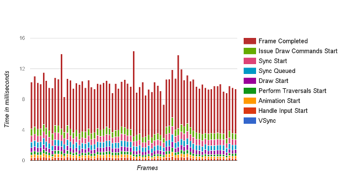

android test ui performance 测试UI性能
User interface (UI) performance testing
测试app是否像黄油一样丝滑，保持 60fps，是否卡顿（without any dropped or delayed frames, or jank）
为啥要 60fsp？
Measuring UI Performance
如何度量UI性能？
使用 dumpsys 打印出 performance 信息。This command can produce multiple different variants of frame timing data.
1 | > adb shell dumpsys gfxinfo <PACKAGE_NAME> |
Aggregate frame stats 聚合帧统计
With Android 6.0 (API level 23) the command prints out aggregated analysis of frame data to logcat, collected across the entire lifetime of the process. For example:
1 2 3 4 5 6 7 8 9 10 11 | Stats since: 752958278148ns Total frames rendered: 82189 Janky frames: 35335 (42.99%) 90th percentile: 34ms 95th percentile: 42ms 99th percentile: 69ms Number Missed Vsync: 4706 Number High input latency: 142 Number Slow UI thread: 17270 Number Slow bitmap uploads: 1542 Number Slow draw: 23342 |
These high level statistics convey at a high level the rendering performance of the app, as well as its stability across many frames.
Precise frame timing info 具体的帧耗时信息
With Android 6.0 comes a new command for gfxinfo, and that’s framestats which provides extremely detailed frame timing information from recent frames, so that you can track down and debug problems more accurately.
framestats 是 Android 6.0 引入的gfxinfo新命令，帮助打印出当前帧的具体渲染时间信息，来帮助Debuug。
1 | >adb shell dumpsys gfxinfo <PACKAGE_NAME> framestats |
This command prints out frame timing information, with nanosecond（10亿纳秒 = 1秒） timestamps, from the last 120 frames produced by the app. Below is example raw output from adb dumpsys gfxinfo <PACKAGE_NAME> framestats:
1 2 3 4 5 | Flags,IntendedVsync,Vsync,OldestInputEvent,NewestInputEvent,HandleInputStart,AnimationStart,PerformTraversalsStart,DrawStart,SyncQueued,SyncStart,IssueDrawCommandsStart,SwapBuffers,FrameCompleted, 0,27965466202353,27965466202353,27965449758000,27965461202353,27965467153286,27965471442505,27965471925682,27965474025318,27965474588547,27965474860786,27965475078599,27965479796151,27965480589068, 0,27965482993342,27965482993342,27965465835000,27965477993342,27965483807401,27965486875630,27965487288443,27965489520682,27965490184380,27965490568703,27965491408078,27965496119641,27965496619641, 0,27965499784331,27965499784331,27965481404000,27965494784331,27965500785318,27965503736099,27965504201151,27965506776568,27965507298443,27965507515005,27965508405474,27965513495318,27965514061984, 0,27965516575320,27965516575320,27965497155000,27965511575320,27965517697349,27965521276151,27965521734797,27965524350474,27965524884536,27965525160578,27965526020891,27965531371203,27965532114484, |
每行数据对应一帧。数据是CSV格式的，方便拷贝到excel中筛选、查看。
出现的timestamp数据的单位，都是 nanosecond（纳秒）。
FLAGS
这列数据为 0 才有效。
- Rows with a ‘0’ for the FLAGS column can have their total frame time computed by subtracting the INTENDED_VSYNC column from the FRAME_COMPLETED column.
- If this is non-zero the row should be ignored, as the frame has been determined as being an outlier from normal performance, where it is expected that layout & draw take longer than 16ms. Here are a few reasons this could occur:
- The window layout changed (such as the first frame of the application or after a rotation)
- It is also possible the frame was skipped in which case some of the values will have garbage timestamps. A frame can be skipped if for example it is out-running 60fps or if nothing on-screen ended up being dirty, this is not necessarily a sign of a problem in the app.
INTENDED_VSYNC
这列数据如果和后面一列 VSYNC 不一样，说明 UI 线程有其他计算，导致不能按预期时间进行渲染。
- The intended start point for the frame. If this value is different from VSYNC, there was work occurring on the UI thread that prevented it from responding to the vsync signal in a timely fashion.
VSYNC
- The time value that was used in all the vsync listeners and drawing for the frame (Choreographer frame callbacks, animations, View.getDrawingTime(), etc…)
- To understand more about VSYNC and how it influences your application, check out the Understanding VSYNC video.
OLDEST_INPUT_EVENT
- The timestamp of the oldest input event in the input queue, or Long.MAX_VALUE if there were no input events for the frame.
- This value is primarily intended for platform work and has limited usefulness to app developers.
NEWEST_INPUT_EVENT
- The timestamp of the newest input event in the input queue, or 0 if there were no input events for the frame.
- This value is primarily intended for platform work and has limited usefulness to app developers.
- However it’s possible to get a rough idea of how much latency the app is adding by looking at (FRAME_COMPLETED - NEWEST_INPUT_EVENT).
HANDLE_INPUT_START
ANIMATION_START - HANDLE_INPUT_START = app花在处理input event 上的时间
- 如果 大于2毫秒，说明耗时长了。一般是
View.onTouchEvent()里面用时间长了。 -
某些情况，例如启动新Activity，长一点没关系。
- The timestamp at which input events were dispatched to the application.
- By looking at the time between this and ANIMATION_START it is possible to measure how long the application spent handling input events.
- If this number is high (
>2ms), this indicates the app is spending an unusually long time processing input events, such asView.onTouchEvent(), which may indicate this work needs to be optimized, or offloaded to a different thread. Note that there are some scenarios, such as click events that launch new activities or similar, where it is expected and acceptable that this number is large.
ANIMATION_START
- The timestamp at which animations registered with Choreographer were run.
- By looking at the time between this and PERFORM_TRANVERSALS_START it is possible to determine how long it took to evaluate all the animators (ObjectAnimator, ViewPropertyAnimator, and Transitions being the common ones) that are running.
- If this number is high (>2ms), check to see if your app has written any custom animators or what fields ObjectAnimators are animating and ensure they are appropriate for an animation.
To learn more about Choreographer, check out the For Butter or Worse video.
PERFORM_TRAVERSALS_START
- If you subtract out DRAW_START from this value, you can extract how long the layout & measure phases took to complete. (note, during a scroll, or animation, you would hope this should be close to zero..)
- To learn more about the measure & layout phases of the rendering pipeline, check out the Invalidations, Layouts and Performance video
DRAW_START
- The time at which the draw phase of performTraversals started. This is the start point of recording the display lists of any views that were invalidated.
- The time between this and SYNC_START is how long it took to call View.draw() on all the invalidated views in the tree.
- For more information on the drawing model, see Hardware Acceleration or the Invalidations, Layouts and Performance video
SYNC_QUEUED
- The time at which a sync request was sent to the RenderThread.
- This marks the point at which a message to start the sync phase was sent to the RenderThread. If the time between this and SYNC_START is substantial (>0.1ms or so), it means that the RenderThread was busy working on a different frame. Internally this is used to differentiate between the frame doing too much work and exceeding the 16ms budget and the frame being stalled due to the previous frame exceeding the 16ms budget.
SYNC_START
- The time at which the sync phase of the drawing started.
- If the time between this and ISSUE_DRAW_COMMANDS_START is substantial (>0.4ms or so), it typically indicates a lot of new Bitmaps were drawn which must be uploaded to the GPU.
To understand more about the sync phase, check out the Profile GPU Rendering video
ISSUE_DRAW_COMMANDS_START
- The time at which the hardware renderer started issuing drawing commands to the GPU.
- The time between this and FRAME_COMPLETED gives a rough idea of how much GPU work the app is producing. Problems like too much overdraw or inefficient rendering effects show up here.
SWAP_BUFFERS
The time at which eglSwapBuffers was called, relatively uninteresting outside of platform work.
FRAME_COMPLETED
All done! The total time spent working on this frame can be computed by doing FRAME_COMPLETED - INTENDED_VSYNC.
分析帧耗时数据
You can use this data in different ways. One simple but useful visualization is a histogram showing the distribution of frames times (FRAME_COMPLETED - INTENDED_VSYNC) in different latency buckets, see figure below. This graph tells us at a glance that most frames were very good - well below the 16ms deadline (depicted in red), but a few frames were significantly over the deadline. We can look at changes in this histogram over time to see wholesale shifts or new outliers being created. You can also graph input latency, time spent in layout, or other similar interesting metrics based on the many timestamps in the data.

Simple frame timing dump
If Profile GPU rendering is set to In adb shell dumpsys gfxinfo in Developer Options, the adb shell dumpsys gfxinfo command prints out timing information for the most recent 120 frames, broken into a few different categories with tab-separated-values. This data can be useful for indicating which parts of the drawing pipeline may be slow at a high level.
Similar to framestats above, it’s very straightforward to paste it to your spreadsheet tool of choice, or collect and parse with a script. The following graph shows a breakdown of where many frames produced by the app were spending their time.

The result of running gfxinfo, copying the output, pasting it into a spreadsheet application, and graphing the data as stacked bars.
Each vertical bar represents one frame of animation; its height represents the number of milliseconds it took to compute that frame of animation. Each colored segment of the bar represents a different stage of the rendering pipeline, so that you can see what parts of your application may be creating a bottleneck. For more information on understanding the rendering pipeline, and how to optimize for it, see the Invalidations Layouts and Performance video
Controlling the window of stat collection
Both the framestats and simple frame timings gather data over a very short window - about two seconds worth of rendering. In order to precisely control this window of time - for example, to constrain the data to a particular animation - you can reset all counters, and aggregate statistics gathered.
1 | adb shell dumpsys gfxinfo <PACKAGE_NAME> reset |
This can also be used in conjunction with the dumping commands themselves to collect and reset at a regular cadence, capturing less-than-two-second windows of frames continuously.
Diagnosing performance regressions
Identification of regressions is a good first step to tracking down problems, and maintaining high application health. However, dumpsys just identifies the existence and relative severity of problems. You still need to diagnose the particular cause of the performance problems, and find appropriate ways to fix them. For that, it’s highly recommended to use the [systrace] tool.
Additional resources
For more information on how Android’s rendering pipeline works, common problems that you can find there, and how to fix them, some of the following resources may be useful to you:
- Rendering Performance 101
- Why 60fps?
- Android, UI, and the GPU
- Invalidations, Layouts and Performance
- Analyzing UI Performance with Systrace
Automating UI Performance Tests
One approach to UI Performance testing is to simply have a human tester perform a set of user operations on the target app, and either visually look for jank, or spend an very large amount of time using a tool-driven approach to find it. But this manual approach is fraught with peril - human ability to perceive frame rate changes varies tremendously, and this is also time consuming, tedious, and error prone.
A more efficient approach is to log and analyze key performance metrics from automated UI tests. Android 6.0 includes new logging capabilities which make it easy to determine the amount and severity of jank in your application’s animations, and that can be used to build a rigorous process to determine your current performance and track future performance objectives.
To learn more about performance tests on Android, see Automated Performance Testing Codelab. In this codelab, you’ll learn how to write and execute automated tests and review the results to understand how to improve your app performance.